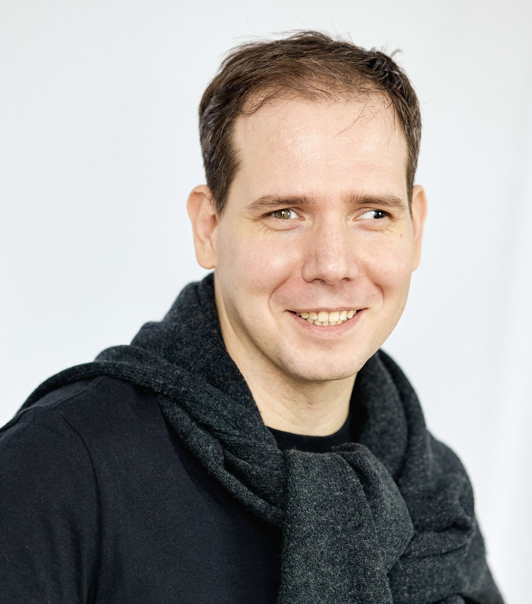

Гештальт подход для меня это поддержка осознавания актуального способа взаимодействия со средой. Так звучит сложное формальное определение. На практике все намного прозаичнее. На сессии я задаю уточняющие вопросы. Могу предложить примерить интерпретации, сказать какие-то фразы и совместно поисследовать отклик на них. Прислушаться к телесным ощущениям. Все это помогает глубже понять себя, собственную мотивацию и, в идеале, проживать свою жизнь во всей ей полноте.
Развитие осознанности может помочьРаботаю онлайн и очно в центре Москвы. Стоимость сессии 2000р/50мин
Записаться можно по телефону, whatsapp telegram
+7(905)793-15-32
PS: Не судите строго. Сайт находиться в разработке. Я верстаю его сам :)